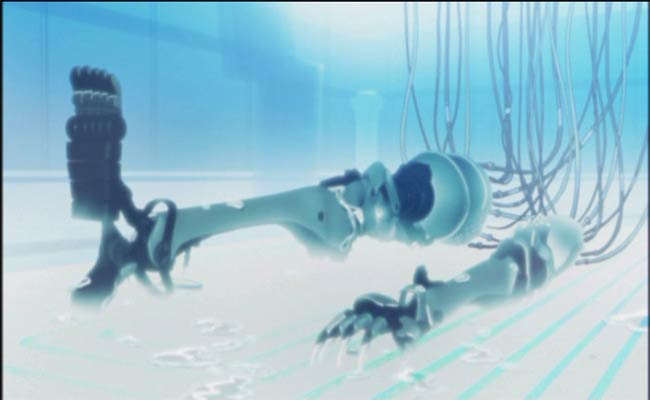
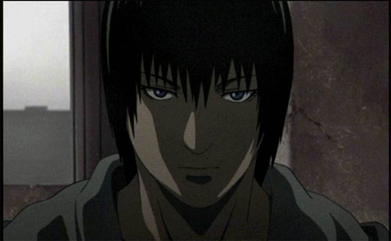
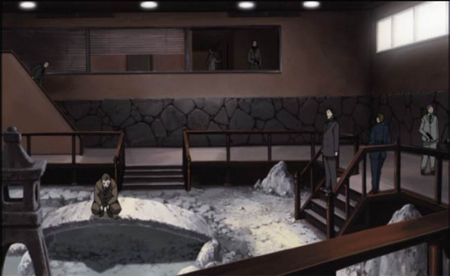
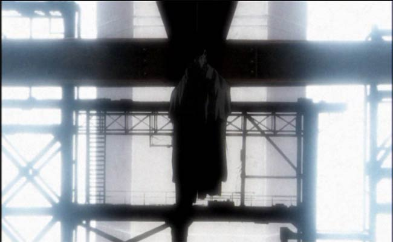
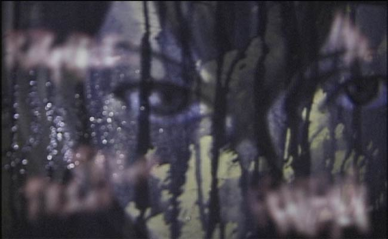
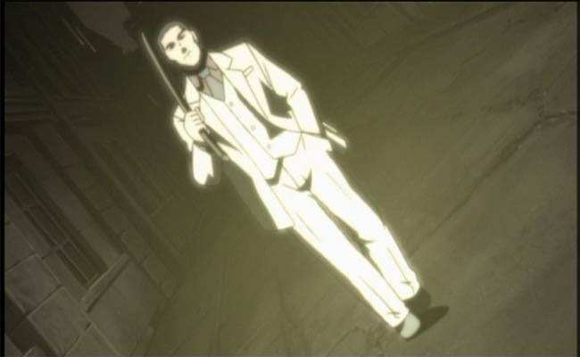

Movie review by : SFAM
Year : 2003
Directed by : Hiroshi Hamazaki
Written by : Chiaki Konaka
Degree of Cyberpunk visuals : Very High
Correlation to Cyberpunk themes : Very High
Rating : 8/10

Overview: Written by one of the most prolific anime writers, Chiaki Konaka (Who also wrote Lain, Malice@Doll, Hellsing, Bubblegum Crises, etc.), Technolyze is a virtual feast of visuals wrapped up in a Lain-style fragmented cyberpunk gangster story. Like Lain, the beginning is almost non-sensical, but creates the foundation for the mood of the rest of the story.

Texhnolyze is the name for the technology to make fully integrated cybernetic limbs like those above. The story follows Ichise, a former down-and-out boxer living in Luckass, a truly disturbed city with the elite rich side and the poor slums. Ichise inadvertently crosses the local mafia (called the Organo), and ends up getting an arm and leg chopped off. But luck would have it that he's a perfect candidate for a hot chick Texhnolyze's doctor's experiments in the latest Texhnolyze research. Ichise carries around a capsule containing his dead mother's body cells, which the doctor integrates into the limbs. Ichise spends many episodes figuring out how to get revenge for how he changed, but based on discussions with a girl who can see the future, his motivations change as the series moves forward.

This is NOT a kids story. Every episode has LOTS of gangster-like killings. We get lots of guns and a few cool sword fights. We also get some nice Texhnolyze deaths with fists going through faces. Truly, this might be described as Goodfellas meets Serial Experiments Lain. And while I haven't gotten the last DVD set, I'm guessing this is is NOT going to be an uplifting story.

The Visuals: Unlike Lain, Texhnolyze is as Neo-noir as they come. The use of shadows is amazing. We get lots of stark white on blacks, interesting gray patterns, and lots of yellows and browns. Also, virtually every character is flawed and mysterious. While the anime is truly riveting, you won't find yourself becoming attached to anyone. The characters simply aren't sympathetic.

Texhnolyze is a virtual feast of visual textures and palettes. Whenever you look through a texhnolyzed person's eyes in first person, you see almost a terminator-like display, only the screen is filled with noise. We also get the most incredibly detailed background sets. Truly, you feel like you know this city after watching a few DVDs worth of this. We also get great camera angles, with sweeping shots, extreme close-ups intermixed with psychedelic-like image merges. Top this with a terrific score and wonderful surround sound, and the WOW effect hits you in total.

The Bottom Line: Truly, it's clear that the creators of Texhnolyze wanted to make something as overtly cyberpunk as possible. They truly have succeeded. Texhnolyze is not for everyone, as the story is violent, obscure, and cold. It is however, a truly awesome and totally original cyberpunk series!